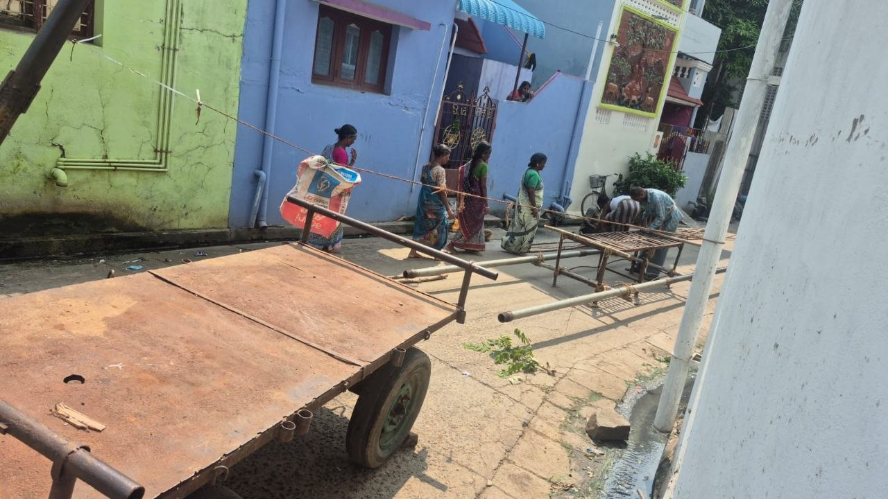
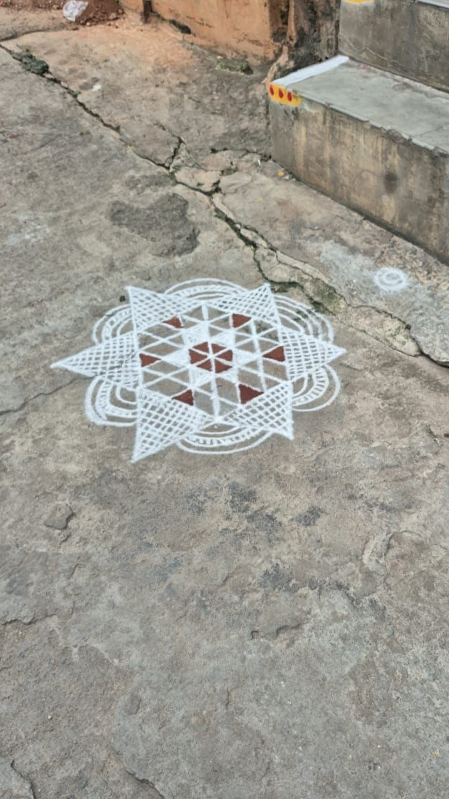
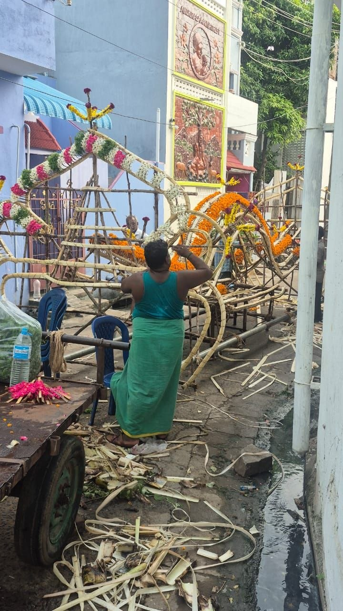
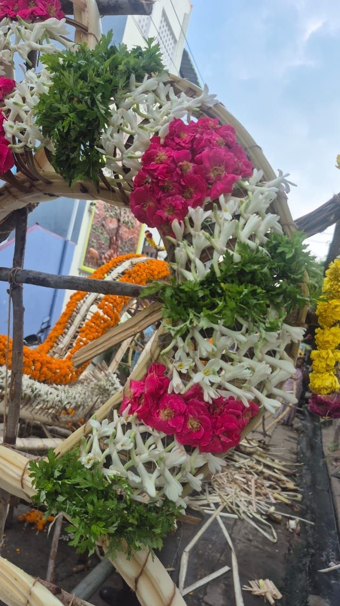
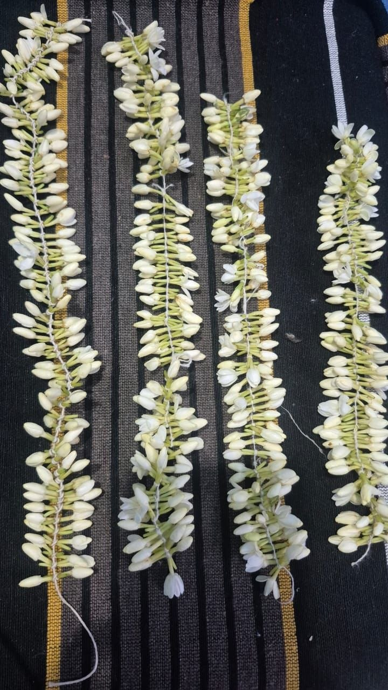

10-11-2025
ചില പോണ്ടിച്ചേരി വിശേഷങ്ങൾ..

വൈകുന്നേരത്തെ ഒരു മൃതദേഹ ഘോഷയാത്രയ്ക്കുള്ള ഒരുക്കങ്ങളാണ് ഇപ്പോൾ ഇവിടെ പോണ്ടിച്ചേരിയിൽ. വൈകുന്നേരം ആകുമ്പോഴുള്ള ഫോട്ടോ പിന്നീട് ഇടാം, കാരണം മുഴുവൻ പുഷ്പാലങ്കൃതമായ ഒരു രാജകീയരഥമായി ഇത് മാറും. ഇന്ന് രാവിലെ ആറുമണിക്ക് തുടങ്ങിയതാണ് ഇവിടെ വലിയ ബാൻഡ് മേളവും കൊട്ടും കുരവയും ഒക്കെ. അതിനി വൈകുന്നേരം വരെ തുടരും. നമ്മുടെ നാട്ടിലെ പോലെ മരണവീട്ടിൽ മൂകത ഒന്നുമില്ല. വീടുകളൊക്കെ സ്ട്രീറ്റിന്റെ രണ്ടു വശങ്ങളിലും ആയതുകൊണ്ട് സ്ട്രീറ്റിൽ പന്തലിട്ടു അതിനു താഴെ കസേര നിരത്തിയിട്ട് ആളുകളൊക്കെ ഇരിക്കുന്നുണ്ട്. വണ്ടികളൊക്കെ മറ്റു വഴികളിലൂടെ തിരിച്ചു വിടുന്നു.
പിന്നെ ഇവിടുത്തെ അമ്പലങ്ങൾക്കു പ്രത്യേകതയാണ്. ഞങ്ങൾ താമസിക്കുന്ന വീടിന്റെ അപ്പുറത്തു തന്നെ ഒരു മാരിയമ്മൻകോവിൽ ഉണ്ട്. ആ കോവിലിൽ എല്ലാ ദിവസവും പൂജ ഒന്നുമില്ല. പക്ഷേ പുറത്തുള്ള ദേവി വിഗ്രഹത്തിൽ വിളക്ക് കത്തിച്ച് എല്ലാദിവസവും മാല ചാർത്തി ഇട്ടേക്കുന്നത് കാണാം. ഒരു ദിവസം കോവിൽ തുറന്നത് കണ്ട് ഞാൻ അകത്തേക്ക് കയറി. അകത്തു നിറയെ കുട്ടികൾ ഓടി കളിക്കുകയായിരുന്നു. അതിനിടയ്ക്ക് ഒരു അമ്മ കയ്യിൽ പഴവും അവിലും കുഴച്ചു കൊണ്ടുവന്ന കുട്ടികൾക്ക് വാരി കൊടുക്കുന്നുണ്ട്. പൂജാരി ഇതൊന്നും ശ്രദ്ധിക്കാതെ അകത്ത് എന്തൊക്കെയോ പണികളിലാണ്. അകത്തുനിന്ന് തന്നെ കുട്ടികൾ ഭക്ഷണം കഴിക്കുന്നത് കണ്ടപ്പോൾ നമ്മുടെ നാടിനെ പറ്റി ഞാൻ ആലോചിച്ചു. രണ്ടുദിവസം കഴിഞ്ഞ് മുന്നിലുള്ള കോവിലിലും ഒന്നു പോയി. ഭക്തർക്കും വിഗ്രഹങ്ങൾക്കും ഇടയിൽ അകൽച്ചയില്ല. വഴിപാടുകളായി പഴം പൂവ് തേങ്ങ എന്നിവ കൊടുക്കാം. പൂജാരി വന്ന് ഭസ്മം കുങ്കുമം എന്നിവ തരികയും തലയിൽ കൈവച്ച് അനുഗ്രഹിക്കുകയും ചെയ്യും. ആണുങ്ങൾക്ക് അദ്ദേഹം തന്നെ നെറ്റിയിൽ ഇതെല്ലാം ചാർത്തി കൊടുക്കും.
ഇന്നലെ രണ്ടുമൂന്നു കുട്ടികളും അവരുടെ അമ്മമാരും കൂടി അമ്പലത്തിൽ വന്നു. പ്രധാന വിഗ്രഹത്തിനു മുന്നിൽ നിന്ന് തന്നെ ബ്രിട്ടാനിയ യുടെ ബിസ്ക്കറ്റ് പൊട്ടിച്ച് കുട്ടികൾ എല്ലാവർക്കും കൊടുത്തു. വന്നവരും പൂജാരിയും എല്ലാം അവിടെ തന്നെ നിന്ന് ബിസ്ക്കറ്റ് തന്നു. എനിക്കും കിട്ടി രണ്ടു ബിസ്ക്കറ്റ്. നല്ല ഗ്രാനൈറ്റ് ഇട്ട വൃത്തിയാക്കിയ ഫ്ലോർ ആയതുകൊണ്ട് അൽപസമയം അവിടെ ഇരുന്നു ഞാൻ ചുറ്റുപാടും വീക്ഷിച്ചു. രണ്ടുമൂന്ന് ഭക്തർ ഒരു സ്റ്റെപ്പിൽ പോയിരിക്കുകയും പൂജാരിയെ കാത്ത് കുറച്ചുപേർ വരികയായി നിൽക്കുകയും ചെയ്തു. പൂജാരി വന്ന് അദ്ദേഹത്തിന്റെ കയ്യിലുള്ള ഒരു മഞ്ഞ പുസ്തകം എടുത്ത് തയ്യാറായി. തമിഴിൽ എന്താണ് പറയുന്നത് എന്ന് പൂർണമായും മനസ്സിലായില്ലെങ്കിലും ജാതകം നോക്കി വിവാഹം നടക്കുന്ന കാര്യം പറയുകയാണെന്ന് മനസ്സിലായി. ലാസ്റ്റ് ഒരു കാര്യം പറഞ്ഞത് വളരെ നന്നായി മനസ്സിലായി. ഏതോ രണ്ട് രാശിയുടെ പേര് പറഞ്ഞു ആ രാശിയിൽ കല്യാണം നടന്നാൽ ഒരു വർഷങ്ങൾക്കുള്ളിൽ തന്നെ കൊളന്ത പിറക്കും എന്ന് മാത്രം കേട്ടു..🤪 ദക്ഷിണയായി 100 രൂപ കൊടുക്കുന്നത് കണ്ടു. അങ്ങനെ ഓരോരുത്തർ ഓരോരുത്തരായി.. നമ്മുടെ നാട്ടിലെ പോലെ കുളിച്ച് ഈറൻ അണിഞ്ഞ മുടി അഴിച്ച് പിന്നി ഇട്ട സ്ത്രീകൾ അല്ല അമ്പലത്തിൽ വരുന്നത്. അവർ ചിലപ്പോൾ രാവിലെ കുളിച്ചിട്ടുണ്ടാവും. മുടിയൊക്കെ കെട്ടിവെച്ചു രണ്ടു സൈഡിൽ പിന്നിട്ടും ഒക്കെയാണ് ആളുകൾ വരുന്നത്.
ഓരോ ദേശം ഓരോ കാഴ്ചകൾ ഒരോ സംസ്കാരങ്ങൾ 😊
ഇവിടുത്തെ ചില പൊതു കാര്യങ്ങൾ...
ഇവിടെ എല്ലാ ദിവസവും വേസ്റ്റ് എടുക്കാനായി ഗവൺമെന്റ് വണ്ടി വരും. Green warrior എന്നാണ് വണ്ടിയുടെ പേര്. മൂന്നാല് ചേച്ചിമാർ ഉണ്ടാകും വണ്ടിയിൽ. നമ്മുടെ സ്ട്രീറ്റിൽ എത്തിക്കഴിഞ്ഞാൽ അവര് വിസിൽ അടിക്കും. അപ്പോൾ എല്ലാ വീടുകളിൽ നിന്നും അടിച്ചുകൂട്ടിയ കരിയിലകൾ പ്ലാസ്റ്റിക്, പേപ്പർ, ഭക്ഷണ waste എല്ലാം വണ്ടിയിലേക്ക് തട്ടും. ഇതൊന്നും അറിയാതെ ആദ്യദിവസം ഞാൻ പ്ലാസ്റ്റിക്,പേപ്പർ എന്നിവയെല്ലാം തരം തിരിച്ചാണ് കൊടുത്തത്. പക്ഷേ എന്റെ കയ്യിൽ നിന്നും വാങ്ങി അതെല്ലാം കൂടി ഒരുമിച്ച് അവർ വണ്ടിയിലേക്ക് തട്ടി. ഞായറാഴ്ചയും അവർ വരും വേസ്റ്റ് എടുക്കാൻ. അതുകൊണ്ടുതന്നെ ഇവിടെ ആരും ഒരു വേസ്റ്റും കത്തിക്കുന്നത് കാണാറില്ല.

എല്ലാദിവസവും കൃത്യസമയത്ത് സർക്കാരിന്റെ പൊതു പൈപ്പ് വഴി വെള്ളം 2 മണിക്കൂർ വരും. എല്ലാ വീടുകളിലും കണക്ഷൻ ഉണ്ട്. ആ രണ്ടുമണിക്കൂർ കൊണ്ട് ഇവിടെയുള്ള ആളുകൾ വീട് വസ്ത്രങ്ങൾ മുറ്റം എല്ലാം കഴികും. റോഡ് വരെ കഴുകി അവിടെ കോലം വരച്ചിടും. ഓരോ ദിവസവും വരയ്ക്കുന്ന കോലങ്ങൾ തൊട്ടപ്പുറത്തെ വീടിനോട് മത്സരിച്ചു വര ക്കുന്നതാണോ എന്ന് തോന്നും. അത്രയും മനോഹരമാണ്. കോലങ്ങൾ കണ്ടു കണ്ടു കോലം വരയ്ക്കാൻ എനിക്കും ഒരു പൂതി തോന്നി. കടയിൽ ചെന്ന് ഒരു കിലോ പൊടി വാങ്ങി.10 രൂപയേ ഉള്ളൂ. ആരും ശ്രദ്ധിക്കാത്ത ഒരു സമയത്ത് കുറച്ചു പൊടി കയ്യിലെടുത്ത് ആ ചേച്ചിമാർ ഇടുന്നത് പോലെ ഇടാൻ നോക്കി ഒന്നെങ്കിൽ ഒരു കട്ടയായിട്ട് ഒരുമിച്ച് വീഴും അല്ലെങ്കിൽ ഒരു നൂല് പോലെ വീഴും അല്ലെങ്കിൽ എന്റെ കൈ മാത്രം ചലിക്കും പൊടി വീഴില്ല. എനിക്ക് തന്നെ ചിരി വന്നു. പക്ഷേ ഒരു രസത്തിന് അന്ന് തൊട്ട് ഞാൻ ചെറിയ ചെറിയ കോലങ്ങൾ ഇടുന്നുണ്ട്. (ഒന്നൊന്നര കോലം ആണെന്ന് മാത്രം 🤪🤪)
പിന്നെ തമിഴ്നാട്ടിൽ നിന്നാണ് നമുക്ക് പച്ചക്കറികൾ വരുന്നെങ്കിലും ഇവിടെ പച്ചക്കറിയൊക്കെ നല്ല വിലയാണ്. ഇവിടെ പക്ഷേ വെള്ളരി ഒന്നുമില്ല. വലിയ കുമ്പളങ്ങ പല പറമ്പുകളിലും ഉണ്ട്. പക്ഷേ അത് പൂജക്കെ എടുക്കാറുള്ളൂ. പച്ചക്കറി കടകളിൽ എവിടെ പോയാലും തക്കാളി വഴുതനങ്ങ അമരയ്ക്ക, ക്യാരറ്റ്, ബീറ്റ്റൂട്ട്, പച്ചമുളക് ഉരുളക്കിഴങ്ങ് വെളുത്തുള്ളി സവോള മാത്രം 😞. സന്ധ്യക്ക് നമ്മൾ ഇറങ്ങി നടന്നാൽ റോഡിന്റെ ഇരുവശങ്ങളിലും ചേച്ചിമാർ ഇരുന്ന് പലതരം ഇലകൾ വിൽക്കുന്നത് കാണാം. എല്ലാ വീടുകളുടെയും മുന്നിൽ വെളുത്ത പൂക്കൾ ഉണ്ടാകുന്ന ചെടികൾ കാണാം. അതുപോലെതന്നെ എല്ലാ വീട്ടിലും നിർബന്ധമായും നട്ടിരിക്കുന്ന ചെടികളാണ് വേപ്പിലയും കറ്റാർവാഴയും. അതുപോലെതന്നെ മുരിങ്ങയും. രണ്ടാഴ്ച കൊണ്ട് ഇത്രയും കാഴ്ചകളൊക്കെയെ ഒപ്പിയെടുത്തുള്ളൂ 🙏🏻.

രാവിലെ മരണപ്പെട്ട ചേട്ടന് യാത്രയാകാനുള്ള മനോഹരമായ രഥം തയ്യാറായിക്കൊണ്ടിരിക്കുന്നു. പൂക്കൾ ഒരു പ്രത്യേക രീതിയിൽ ചെറിയ മുള കഷണങ്ങളിൽ സെറ്റ് ചെയ്തു കൊണ്ടുവരും. ഈ രഥത്തിൽ മുള വലിച്ചുകെട്ടി സെറ്റ് ചെയ്ത പൂക്കൾ അതിൽ മനോഹരമായ റീസെറ്റ് ചെയ്യുന്നു.

എനിക്കറിയാവുന്ന തമിഴിൽ ഇതിന് എത്രയാ ചെലവ് എന്ന് ചോദിച്ചു. ഇറുവായിനായിരം എന്നു പറഞ്ഞു 🤪
11-11-2025
മൂന്നാഴ്ചത്തെ പോണ്ടിച്ചേരി വാസം കൊണ്ട് പഠിച്ച അനുഭവങ്ങൾ പാഠങ്ങൾ 🤪... എന്റെ ചില ധാരണകൾ... അവയ്ക്ക് വന്ന മാറ്റങ്ങൾ 😜😜
12-11-2025
ഒരു മുഴം പരീക്ഷണങ്ങൾ

ഇന്നത്തെ പരീക്ഷണം 30 രൂപയുടെ മൊട്ടു മാത്രം വാങ്ങി നാല് മുഴം പൂ കെട്ടിവെച്ചു 🤪🤪🤪. പണ്ട് സ്കൂളിൽ പഠിക്കുന്ന കാലത്ത് തിരുവനന്തപുരത്ത് അഞ്ചാറു വർഷം ഉണ്ടായിരുന്നതുകൊണ്ട് പൂകെട്ടാൻ പഠിച്ചിരുന്നു😅. (ഇവിടെ വന്ന സമയത്ത് ഞാൻ ഒരു മുഴം വാങ്ങിയിരുന്നു 60 രൂപ) കുറച്ചുകാലം കൂടി ഇവിടെ തുടരുകയാണെങ്കിൽ നല്ലൊരു പൂക്കച്ചവടക്കാരി ആകാനുള്ള എല്ലാ സാധ്യതയും ഞാൻ കാണുന്നുണ്ട്. കാരണം 30 രൂപയുടെ മൊട്ടിൽ നിന്ന് ഞാൻ 180 രൂപയുടെ മാല കെട്ടി 😅😅)
13-11-2025
ഞാൻ പോണ്ടിച്ചേരിയിൽ നിന്ന് നാട്ടിലേക്ക്
ചില ട്രെയിൻ കാഴ്ചകൾ 🤪
S7-44 സീറ്റിലേക്ക് ബാഗുമായി ചെന്നപ്പോൾ ചന്ദന കളർ ഹാകൊബ ചുരിദാർ ഇട്ടു കറുത്ത ഫ്രെയിം ഇട്ട കണ്ണട വച്ച, മുടി ബോബ് ചെയ്ത 65/68 വയസ്സ് തോന്നിക്കുന്ന ഒരു ലേഡി മാത്രം എനിക്ക് എതിർവശത്തുള്ള സീറ്റിൽ. ഞാൻ ചിരിച്ചെങ്കിലും തിരിച്ചു അത്ര തെളിമയില്ലാത്ത ചിരിയാണ് എനിക്ക് കിട്ടിയത്. ഒരു 10 മിനിറ്റിനുള്ളിൽ അവർ നീണ്ടു നിവർന്നു കിടന്നു ഉറങ്ങി. അടുത്ത 45 മിനിറ്റിനു ശേഷം ട്രെയിൻ എത്തിച്ചേർന്നത് വിലുംപുരം എന്ന് പറയുന്ന ജംഗ്ഷനിലാണ്. അവിടെനിന്നാണ് ഒരുപാട് ട്രെയിനുകൾ മറ്റ് പല ഭാഗങ്ങളിലേക്കും തിരിഞ്ഞു പോകുന്നത്. അവിടെ അരമണിക്കൂർ ട്രെയിൻ നിർത്തിയിടുന്നത് കൊണ്ടും 5:00 മണി ആയതുകൊണ്ടും ഞാൻ ഒരു ചായ കുടിക്കാനായി ഇറങ്ങി. ചായ കുടിച്ചു തിരിച്ചു വരുമ്പോൾ ഒരു ഉമ്മയും മകനും 45,46 ഇൽ ഉണ്ട്. അപ്പോഴേക്കും നമ്മുടെ ലേഡി എഴുന്നേറ്റ് ഓപ്പോസിറ്റ് സൈഡിലുള്ള സിംഗിൾ സീറ്റിൽ പോയിരുന്നു ഒരു ചായയും ഒരു പാക്കറ്റ് സമൂസയും വാങ്ങി കഴിക്കുന്നുണ്ടായിരുന്നു. അപ്പോഴേക്കും ഞാനും ഉമ്മയും പതുക്കെ സംസാരിച്ചു പരിചയപ്പെട്ടു. അവര് തലശ്ശേരിക്കും ഞാൻ കണ്ണൂർക്കുമാണ് എന്ന് അറിഞ്ഞപ്പോൾ അവർക്ക് എന്നോട് സംസാരിക്കാൻ ഉത്സാഹമായി. അവരുടെ മകൻ പോണ്ടിച്ചേരിയിൽ ജോലി ചെയ്യുകയാണെന്നും അവന് ഭക്ഷണം ശരിയാകാത്തത് കൊണ്ട് അവന്റെ കൂടെ നിൽക്കാൻ പോയതാണെന്നും ഇപ്പോൾ ഇലക്ഷനുമായി ബന്ധപ്പെട്ട് BLO വിളിച്ചിട്ട് ചില പേപ്പറുകൾ ശരിയാക്കാൻ പോകുന്നുന്ന് എന്നോട് പറഞ്ഞു. ചായകുടി കഴിഞ്ഞ് കിടന്ന ലേഡി ഇത് കേട്ടതും ചാടി എഴുന്നേറ്റിരുന്നു. ഇതിനൊക്കെ നാട്ടിൽ പോകേണ്ട ആവശ്യമുണ്ടോ ഇതൊക്കെ ഓൺലൈനിൽ ചെയ്താൽ പോരേ? ഞാൻ അതൊക്കെ ഓൺലൈനിൽ ആണ് ചെയ്തത്. പിന്നെ അവർ പതുക്കെ ഉമ്മയോട് എന്തൊക്കെയോ ചോദിച്ചു വിവരങ്ങളൊക്കെ അറിയുന്നുണ്ടായിരുന്നു. ഞാനൊരു 6.45 ആയപ്പോൾ തന്നെ കഴിക്കാൻ കൊണ്ടുവന്ന ഏത്തപ്പഴം കഴിച്ചു കുറച്ചു കഴിഞ്ഞപ്പോൾ ഉമ്മയും മകനും അവർ കൊണ്ടുവന്ന ബിരിയാണി പുറത്തേക്ക് എടുത്തു. അവർ എന്നോട് കഴിക്കാൻ കുറെ നിർബന്ധിച്ചു. (തലശ്ശേരി ഉമ്മമാരുടെ ഭക്ഷണം തരാനുള്ള സ്നേഹം അത് വേറെ തന്നെ) നമ്മുടെ ലേഡി അപ്പോൾ ഒരു കവറിൽ നിന്നും ആപ്പിൾ കഷ്ണം എടുത്ത് കഴിക്കാൻ തുടങ്ങുകയായിരുന്നു. അവര് ഉമ്മയെ നോക്കി ഒരു വക്രിച്ച ഭാവത്തോടുകൂടി പറഞ്ഞു. 😏ഹായ് ഞാൻ ഇത്തരം സാധനങ്ങൾ ഒന്നും സന്ധ്യക്ക് ശേഷം കഴിക്കാറില്ല. ഞാൻ കുറച്ച് ചിട്ടയൊക്കെ ഉള്ള കൂട്ടത്തിലാണ്. എന്തൊക്കെ സംഭവിച്ചാലും ഞാൻ ഒൻപതു മണിക്ക് കിടക്കും രാവിലെ നാലുമണിക്ക് എഴുന്നേൽക്കും. ഈ സമയത്തിനിടയ്ക്ക് എന്നെ ആരും ഫോൺ വിളിക്കരുത്. ഇത് എന്റെ കൽപ്പനയാണ്. എന്നെ ആവശ്യമുള്ളവർ അതിനിടയ്ക്ക് വിളിച്ചോളൂക. ഉമ്മ സ്വതസിദ്ധമായ പുഞ്ചിരിയോട് ചോദിച്ചു: വീട്ടിൽ ആരും ഇല്ലാത്ത നിങ്ങളെന്തിനാണ് രാവിലെ നാലുമണിക്ക് എഴുന്നേൽക്കുന്നത്. ഞാൻ അങ്ങനെ നല്ല ചിട്ടയിൽ ഒക്കെയാണ് വളർന്നത്. ഈ സംസാരത്തിനിടയിൽ ബിരിയാണി പാക്കറ്റ് ഉമ്മ തുറന്നു. തലശ്ശേരി ബിരിയാണിയുടെ മാസ്മരിക ഗന്ധം കമ്പാർട്ട്മെന്റ് മുഴുവൻ പരന്നു. എന്നോട് ചോദിച്ചതുപോലെ ഉമ്മ അവരോടും ചോദിച്ചു കുറച്ച് ബിരിയാണി തരട്ടെ. ഞാൻ വെറുതെ അവരുടെ മുഖത്തേക്ക് നോക്കി. ആ സമയത്തിനുള്ളിൽ ബിരിയാണി പാത്രത്തിന്റെ ഒരു ഭാഗം എങ്ങനെയാ അവരുടെ കയ്യിൽ എത്തിയതെന്ന് എനിക്കറിയില്ല അത് തിന്നുകൊണ്ടിരിക്കുന്നതിനിടയിൽ അവർ ഉമ്മയെ വേറെ ബിരിയാണി വെക്കാൻ പഠിപ്പിച്ചു. ബിരിയാണി നന്നായിട്ടുണ്ട് എന്ന് അവർക്ക് പറയാതിരിക്കാൻ കഴിഞ്ഞില്ല. എന്നിട്ടും ബിരിയാണിക്ക് എങ്ങനെയാണ് ഉള്ളി വറക്കേണ്ടത് എന്നും ചിക്കനിലേക്ക് നന്നായി മസാല ഞരടി പിടിപ്പിക്കണം എന്നും അവർ ഉമ്മയെ പഠിപ്പിച്ചു. അതിനിടയ്ക്ക് ഉമ്മ എന്തോ സംശയം ചോദിക്കാൻ വാ തുറന്നപ്പോൾ അവർ ഉമ്മയോട് ശാസനയോട് പറഞ്ഞു. ആദ്യം ഞാൻ പറയുന്നത് കേൾക്ക് അതിനു ശേഷം ചോദിക്കൂ.. പാവം ഉമ്മ😅 അച്ചടക്കമുള്ള കുട്ടിയെ പോലെ കേട്ടിരുന്നു. ക്ലാസ്സ് കഴിഞ്ഞശേഷം ഉമ്മ ചോദിച്ചു ഇത് പുതിയ രീതിയാ.. ഉടനെ ആ സ്ത്രീ ഞാനെന്താ ഇന്നും ഇന്നലെയും വെക്കാൻ തുടങ്ങിയതാണോ ഇതൊക്കെ... യൂട്യൂബ് വരുന്നതിനു മുമ്പേ ഞാൻ ഇതെല്ലാം കൃത്യമായി ശാസ്ത്രീയമായി ചെയ്യാറുണ്ട്. എന്റെ ആരോഗ്യം ഞാൻ നോക്കണ്ടേ.. അതും പറഞ്ഞു ബാഗിൽ നിന്ന് 5/6 ഗുളിക കഴിച്ചു കിടന്നു. കിടന്ന് 5 മിനിറ്റിനുള്ളിൽ തന്നെ തല പൊന്തിച്ച് ചോദിച്ചു, ചിക്കൻ നിങ്ങൾ പൊരിച്ചിട്ടാണോമസാലയിലിട്ടത്🤪🤪(തലശ്ശേരി ബിരിയാണിയുടെ പവർ കൊണ്ട് അവരുടെ ഈഗോ പറപറന്നു) എന്നാലും സമ്മതിച്ചു കൊടുക്കാൻ പറ്റില്ലല്ലോ. പിറുപിറുത്തു കൊണ്ട് ഞാൻ കൊണ്ടുവന്ന ആപ്പിളൊക്കെ ബാക്കിയായി എന്നും പറഞ്ഞ് മലർന്ന് അങ്ങനെ കിടന്നു.( ഒരു കാര്യം കൂടി കൂട്ടി ചേർക്കട്ടെ തള്ളിനും കുറവൊന്നുമില്ല. ചൊക്ലിയിൽ ഒരു കോടി രൂപയുടെ വീടാണ് ഞാൻ എടുത്തിരിക്കുന്നത്.. പക്ഷേ എനിക്ക് പോണ്ടിച്ചേരി നിൽക്കാനാണ് ഇഷ്ടം.. മാസം 600 രൂപ എനിക്ക് എല്ലാ മാസവും പോണ്ടിച്ചേരി സർക്കാർ തരുന്നുണ്ട്...അല്ലാതെ നിങ്ങടെ സർക്കാരിനെ പോലെ എല്ലാം അകത്തേക്ക് വീഴുങ്ങുവല്ല 🤪🤪🤪)